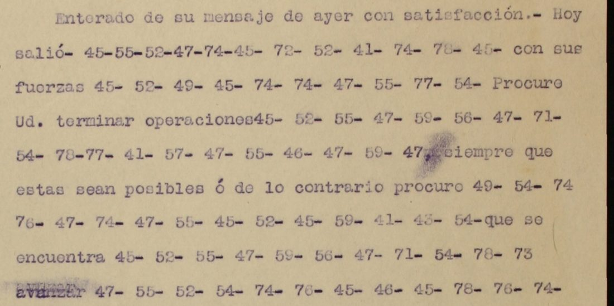

At a glanceCiphertext-only break · complete
- The order
- A typed sheet on the letterhead “Ejército Constitucionalista, División del Noreste, Cuartel General”, dated “H. Matamoros, Diciembre 2[?] de 1913” (the day’s second figure is worn), addressed to “Sr. Coronel Andrés Saucedo, Sabinas Hidalgo” and signed “El General en Jefe” with no name. The contributor identifies the writer as Pablo González, from his papers and the letterhead. Clear Spanish with sixteen runs of two-figure numbers (290 groups).
- Where
- CEHM-Carso, Mexico City, Fondo LXVIII-1 (papers of Gen. Pablo González), LXVIII-1.7.890.1, one scan. Part of catalogue entry 1465; its other items are deciphered on their own pages or not yet deciphered.
- The cipher
- A simple substitution: one two-figure number per letter, 23 numbers between 41 and 79, partly in alphabetical order (a b c are 47 48 49). It is not Clave Extra 3, which is the system of two other sheets of the fonds (one, two) and gives no Spanish here.
- How it was read
- No key or decipherment is known. Hill-climbing on Spanish letter trigrams over the 290 groups gave Spanish at once; three cells were then set by reading. A split-half test of the key failed (below), so the key stands on the reading: place names and surnames that the trigram model does not know, and clear words that fit.
- What it says
- Finish operations at Lampazos and Villaldama or cut off the enemy at Lampazos and advance north, destroying the lines of communication, to be near Laredo by Friday; Castro, Dávila Sánchez and Santoscoy to take position near Laredo the same day; the place to be attacked on Saturday or Sunday at the latest.
- Still open
- One run of three groups (“eln”) decrypts to no word, and one word carries a one-letter repair; both count as not read (96.7%). The day of the month is worn. The key rests on one sheet and four of its numbers occur once.
- Credit
- Transcription, key recovery and reading by WAINUT with AI language-model agents from the CEHM image; no human palaeographer checked the text. The project re-ran the scripts, re-ran the hill-climb, wrote its own decoder and compared the scan.
01 The sheet
A typed sheet from the papers of General Pablo González, on the letterhead of the Constitutionalist Army’s División del Noreste, dated at Matamoros in December 1913 and addressed to Colonel Andrés Saucedo at Sabinas Hidalgo. It is signed “El General en Jefe”, with a further typed line “El Jefe del E.M.” beneath (partly typed over); no name is given. The contributor takes the writer to be Pablo González because the item is in his papers, because of the letterhead, and because Murguía’s letter of March 1914 in the same fonds (LXVIII-1.14.1943.1) is addressed to “Pablo González” as general in chief of the División del Noreste; that identification is an inference. The typing is clear: sixteen runs of two-figure numbers stand between typed clear words, which gives a clean transcription (the two passes differ at one figure in 290).

02 The key
The key is a one-to-one substitution of letters by two-figure numbers: 23 numbers occur, all between 41 and 79 (41 i, 42 h, 43 g, 45 e, 46 d, 47 a, 48 b, 49 c, 52 n, 54 o, 55 l, 56 p, 57 ll, 58 q, 59 m, 71 z, 72 u, 73 y, 74 r, 76 t, 77 v, 78 s, 79 x), and they run in part alphabetically (a b c are 47 48 49; i h g are 41 42 43). The Clave Extra 3 key of the other two sheets gives no Spanish on these runs.
The contributor fitted the substitution by hill-climbing on letter trigrams taken from the repository’s Spanish lexicon, with 40 random restarts; the best fit reads at once. The integration check ran the script unchanged and got the same fit: 20 of the 23 cells as in the final key, and the three that were then set by reading, 57 as ll in Villaldama (the fit gave j), 77 as v (the fit gave f) and 79 as x in próximo (the fit gave v). 42 h comes from the fit and stands in one place only (Sánchez).
03 The test failed
The key was not tested on a held-out passage, and the split-half test the contributor tried failed. Fitted on the first eight runs alone, the same program does not find the key; fitted on the first twelve it agrees with the final key in 10 of the 22 cells it fits, and the last four runs read only in part (“tardeeilabadoodosunzo” for tarde el sábado o domingo). These are the contributor’s figures, not re-run here. A key is not validated by a split in which it cannot be found, and this page does not claim one.
What makes the key credible is other evidence. It has 23 values fitted on 290 letters of one monoalphabetic text, far more than such a fit needs. It gives places of Nuevo León and Tamaulipas (Cerralvo, Lampazos, Villaldama, Laredo, San Ygnacio) and the surnames Castro, Dávila Sánchez and Santoscoy, which the trigram model does not know. The typed clear words before and after each run fit what the runs say (“Hoy salió … con sus fuerzas”, “plaza que … cuando más … próximos”, “Pasado mañana … donde … á fin de mandarles … á que me refiero”). The contributor’s statistical check passes (a score per letter of −2.216 against −7.61 on average for 200 random keys, best −5.22; z 7.4; a key annealed onto shuffled ciphertext at best −4.00); it is not a held-out test, since the key was fitted on the same groups.
04 The reading
H. Matamoros, Diciembre 2[?] de 1913. Sr. Coronel Andrés Saucedo, Sabinas Hidalgo. Enterado de su mensaje de ayer con satisfacción. Hoy salió {EL N/[?]} A REUNIRSE con sus fuerzas EN CERRALVO. Procure Ud. terminar operaciones EN LAMPAZOS, VILLALDAMA, siempre que éstas sean posibles, ó de lo contrario procure CORTAR AL ENEMIGO que se encuentra EN LAMPAZOS Y avanzar AL NORTE DESTRUYENDO LAS VÍAS DE comunicación, debiendo estar EN LAS CERCANÍAS DE LAREDO para EL VIERNES PRÓXIMO. Ya he dado órdenes A CASTRO, DÁVILA SÁNCHEZ Y SANTOSCOY para que salgan A SITUARSE ESE mismo DÍA CERCA DE LAREDO, plaza que DEBEMOS ATACAR cuando más TARDE EL SÁBADO O DOMINGO próximos. Pasado mañana SALGO PARA SAN YGNACIO, donde ESPERO L{O/A}S NOTICIAS DE UDS. á fin de mandarles INSTRUCCIONES PARA EL ATAQUE á que me refiero. Los felicito por el buen éxito de sus operaciones hasta hoy. El General en Jefe.
In English: “I received your message of yesterday with satisfaction. Today [?] left to join his forces at Cerralvo. Try to finish operations at Lampazos, Villaldama, as far as they are possible; otherwise try to cut off the enemy who is at Lampazos and to advance to the north destroying the lines of communication, being in the neighbourhood of Laredo by next Friday. I have already given orders to Castro, Dávila Sánchez and Santoscoy to leave and take up position that same day near Laredo, a place we must attack at the latest on the coming Saturday or Sunday. The day after tomorrow I leave for San Ygnacio, where I await the news from you, in order to send you instructions for the attack I refer to.” Capitals are the coded words; braces mark the open run and the one repair. That these are the preparations for the Constitutionalist attack on Nuevo Laredo is the contributor’s inference: the sheet names only Laredo and gives no date for the attack.
Counted by the README rule, strictly, the sixteen runs hold 61 coded words: 59 verbatim from the signs, 1 with a marked repair (l{o/a}s, where the key gives o and the sense needs a) and 1 open, the three groups at the start of the first run (“eln”), which make no word before a reunirse. The two count as not read: 59 of 61, 96.7%, over the 95% bar. An AI reader who did not make the work graded the reading A: three clean paragraphs and a translation that matches. The clear word after the fifth run (avanzar) is typed over on the sheet.
05 What remains uncertain
- The three groups before a reunirse in the first run (45-55-52) are legible and decrypt to “eln”, which is no word: a clerk’s slip, or a name the key cannot give. There is no second occurrence to test it on (too short).
- The day of the month (2 and a worn figure; the integration check read 22 on the scan) is not relied on (illegible).
- The key rests on one sheet; numbers 42, 57, 58 and 79 occur once each. The split-half test failed (above). The key was not tried on the other items of the fonds that the catalogue lists as in code: LXVIII-1.2.56.1 and 2.75.1 do not read with it or with Clave Extra 3, and 8.957.1-2 could not be fetched (HTTP 404 on the image route).
- The writer is identified by the contributor, not named on the sheet. “Clave alpha-32” and “Clave N/O.3” are named on a cover note (LXVIII-1.23.3148.1) with no key on the scan; whether this sheet uses either is not known. No edition or decipherment of this sheet was found by the contributor’s web searches (repeated once by a reviewer); the 2019 and 2025 articles by Narváez on Constitutionalist cryptography and M. W. González, Con Carranza, were not read, so a printed reading cannot be ruled out.
Full texts
The transcription and the decryption of every document on this page, so that the reading can be used and checked. Short files are shown here; all are in the repository.
El General en Jefe to Col. Andrés Saucedo, Matamoros, Dec 1913
The General en Jefe (identified by the contributor as Pablo González) tells Saucedo to finish operations at Lampazos and Villaldama or cut off the enemy at Lampazos, advance north destroying the lines of communication and be near Laredo by next Friday; Castro, Dávila Sánchez and Santoscoy are to take up position near Laredo the same day, the place to be attacked on Saturday or Sunday at the latest; he leaves for San Ygnacio and will send instructions for the attack. Probably the preparations for the attack on Nuevo Laredo (inferred).
Transcription
transcription_LXVIII-1.7.890.1.txt
# CEHM LXVIII-1.7.890.1, Pablo González (Cuartel General, Ejército Constitucionalista, División del Noreste) to Coronel Andrés Saucedo, Sabinas Hidalgo; H. Matamoros, Diciembre 2? de 1913 (day figure faint). Typed. Reconciled: pass 1 and pass 2 give the same group at 289 of 290 places; the one figure open in pass 1 (M09 g18) reads 42 on the pass-2 crop. M01 Hoy salio | 45-55-52-47-74-45-72-52-41-74-78-45 | con sus fuerzas M02 con sus fuerzas | 45-52-49-45-74-74-47-55-77-54 | Procure Ud. terminar operaciones M03 terminar operaciones | 45-52-55-47-59-56-47-71-54-78-77-41-57-47-55-46-47-59-47 | siempre que estas sean posibles o de lo contrario procuro M04 procuro | 49-54-74-76-47-74-47-55-45-52-45-59-41-43-54 | que se encuentra M05 que se encuentra | 45-52-55-47-59-56-47-71-54-78-73 | avanzar (typed over) M06 avanzar | 47-55-52-54-74-76-45-46-45-78-76-74-72-73-45-52-46-54-55-47-78-77-41-47-78-46-45 | comunicacion debiendo estar M07 debiendo estar | 45-52-55-47-78-49-45-74-49-47-52-41-47-78-46-45-55-47-74-45-46-54 | para M08 para | 45-55-77-41-45-74-52-45-78-56-74-54-79-41-59-54 | .= Ya he dado ordenes M09 ordenes | 47-49-47-78-76-74-54-46-47-77-41-55-47-78-47-52-49-42-45-71-73-78-47-52-76-54-78-49-54-73 | para que salgan M10 salgan | 47-78-41-76-72-47-74-78-45-45-78-45 | mismo M11 mismo | 46-41-47-49-45-74-49-47-46-45-55-47-74-45-46-54 | plaza que M12 plaza que | 46-45-48-45-59-54-78-47-76-47-49-47-74 | cuando mas M13 cuando mas | 76-47-74-46-45-45-55-78-47-48-47-46-54-54-46-54-59-41-52-43-54 | proximos.= Pasado manana M14 Pasado manana | 78-47-55-43-54-56-47-74-47-78-47-52-73-43-52-47-49-41-54 | donde M15 donde | 45-78-56-45-74-54-55-54-78-52-54-76-41-49-41-47-78-46-45-72-46-78 | a fin de mandarles M16 a fin de mandarles | 41-52-78-76-74-72-49-49-41-54-52-45-78-56-47-74-47-45-55-47-76-47-58-72-45 | a que me refiero.
Decryption
decryption_LXVIII-1.7.890.1.txt
# Mechanical decryption with key_frozen.tsv (scripts/decrypt.py); capitals = word codes; [NN] = unread or unidentified group M01 elnareunirse # 12 groups, 0 unread/unidentified M02 encerralvo # 10 groups, 0 unread/unidentified M03 enlampazosvillaldama # 19 groups, 0 unread/unidentified M04 cortaralenemigo # 15 groups, 0 unread/unidentified M05 enlampazosy # 11 groups, 0 unread/unidentified M06 alnortedestruyendolasviasde # 27 groups, 0 unread/unidentified M07 enlascercaniasdelaredo # 22 groups, 0 unread/unidentified M08 elviernesproximo # 16 groups, 0 unread/unidentified M09 acastrodavilasanchezysantoscoy # 30 groups, 0 unread/unidentified M10 asituarseese # 12 groups, 0 unread/unidentified M11 diacercadelaredo # 16 groups, 0 unread/unidentified M12 debemosatacar # 13 groups, 0 unread/unidentified M13 tardeelsabadoodomingo # 21 groups, 0 unread/unidentified M14 salgoparasanygnacio # 19 groups, 0 unread/unidentified M15 esperolosnoticiasdeuds # 22 groups, 0 unread/unidentified M16 instruccionesparaelataque # 25 groups, 0 unread/unidentified
Reading
# Reading of Pablo González's orders to Andrés Saucedo, Matamoros, December 1913 (CEHM LXVIII-1.7.890.1)
Typed sheet on letterhead "Ejército Constitucionalista, División del Noreste, Cuartel General". Clear text as typed. Coded text in capitals, decrypted with `key_frozen.tsv`, a simple substitution (one two-figure number per letter, 23 numbers) recovered from this sheet's ciphertext alone. Marks: `{x/y}` the key gives x, the reading takes y.
> H. Matamoros, Diciembre 2[?] de 1913. Sr. Coronel Andrés Saucedo, Sabinas Hidalgo.
>
> Enterado de su mensaje de ayer con satisfacción. Hoy salió {EL N/[?]} A REUNIRSE con sus fuerzas EN CERRALVO. Procure Ud. terminar operaciones EN LAMPAZOS, VILLALDAMA, siempre que éstas sean posibles, ó de lo contrario procure CORTAR AL ENEMIGO que se encuentra EN LAMPAZOS Y avanzar AL NORTE DESTRUYENDO LAS VÍAS DE comunicación, debiendo estar EN LAS CERCANÍAS DE LAREDO para EL VIERNES PRÓXIMO.
>
> Ya he dado órdenes A CASTRO, DÁVILA SÁNCHEZ Y SANTOSCOY para que salgan A SITUARSE ESE mismo DÍA CERCA DE LAREDO, plaza que DEBEMOS ATACAR cuando más TARDE EL SÁBADO O DOMINGO próximos.
>
> Pasado mañana SALGO PARA SAN YGNACIO, donde ESPERO L{O/A}S NOTICIAS DE UDS. á fin de mandarles INSTRUCCIONES PARA EL ATAQUE á que me refiero. Los felicito por el buen éxito de sus operaciones hasta hoy. El General en Jefe.
The first coded run gives ELNAREUNIRSE. "A reunirse con sus fuerzas" reads; the three groups before it (45-55-52, "eln") do not make a word and are left open. The clear word after the fifth run ("avanzar") is typed over on the sheet.
## Coded runs (checked by scripts/check_marks.py)
M01 | {eln/[?]} a reunirse
M02 | en cerralvo
M03 | en lampazos villaldama
M04 | cortar al enemigo
M05 | en lampazos y
M06 | al norte destruyendo las vías de
M07 | en las cercanías de laredo
M08 | el viernes próximo
M09 | a castro dávila sánchez y santoscoy
M10 | a situarse ese
M11 | día cerca de laredo
M12 | debemos atacar
M13 | tarde el sábado o domingo
M14 | salgo para san ygnacio
M15 | espero l{o/a}s noticias de uds
M16 | instrucciones para el ataqueTranslation
translation_LXVIII-1.7.890.1.md
# Translation: Pablo González to Andrés Saucedo, Matamoros, December 1913 (CEHM LXVIII-1.7.890.1) Coded parts in capitals, with the same holes as the Spanish reading. > H. Matamoros, December 2[?], 1913. Colonel Andrés Saucedo, Sabinas Hidalgo. > > I received your message of yesterday with satisfaction. Today [?] left TO JOIN his forces AT CERRALVO. Try to finish operations AT LAMPAZOS, VILLALDAMA, as far as they are possible; otherwise try TO CUT OFF THE ENEMY who is AT LAMPAZOS AND to advance TO THE NORTH DESTROYING THE LINES OF communication, being IN THE NEIGHBOURHOOD OF LAREDO by NEXT FRIDAY. > > I have already given orders TO CASTRO, DÁVILA SÁNCHEZ AND SANTOSCOY to leave and TAKE UP POSITION THAT same DAY NEAR LAREDO, a place WE MUST ATTACK at the LATEST ON the coming SATURDAY OR SUNDAY. > > The day after tomorrow I LEAVE FOR SAN YGNACIO, where I AWAIT THE NEWS FROM YOU, in order to send you INSTRUCTIONS FOR THE ATTACK I refer to. I congratulate you on the good success of your operations so far. The General in Chief.
Key: key.tsv
06 Sources
- CEHM-Carso (Centro de Estudios de Historia de México, Fundación Carlos Slim), Fondo LXVIII-1: LXVIII-1.7.890.1, image 0001 (direct JPG from the CEHM viewer, fetched 12 and 13 November 2026; the viewer refused nothing). Viewer: LXVIII-1.7.890.1.
- Transcription, key recovery, readings and scripts by WAINUT (pull request #516), in
targets/gonzalez1913.
The key, the transcription, the readings, the scripts and the split-half fits are in targets/gonzalez1913.
Cite this page
WAINUT and Daniel Bourdeau, “The General en Jefe to Col. Andrés Saucedo, Matamoros, December 1913”, Cyphersolver, posted 13 November 2026, https://cyphersolver.com/gonzalez1913.html.